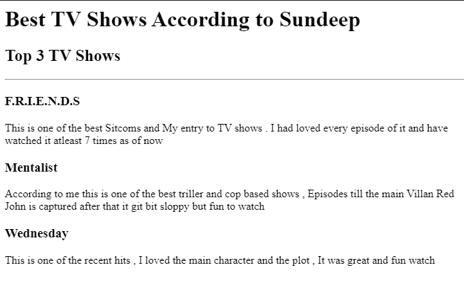

Sundeep's Portfolio
I'm a QE&A expert with experience in both Automation & Non Function testing and aiming to be a Full stack developer.
My Favourite TOP 3 TV shows Ranking Webpage

Inviting for MY Birthday Party
About Me
Contact Me